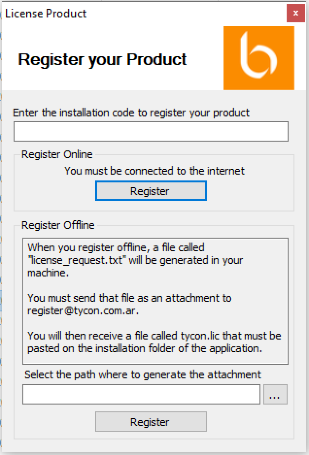
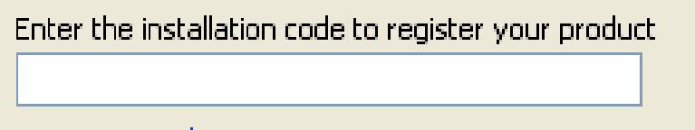
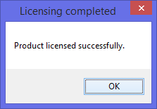
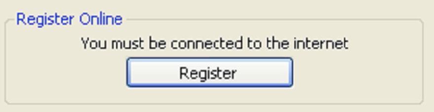
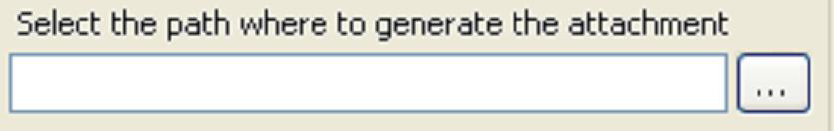
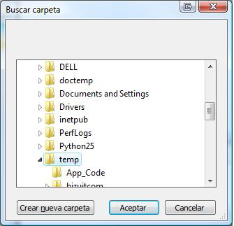
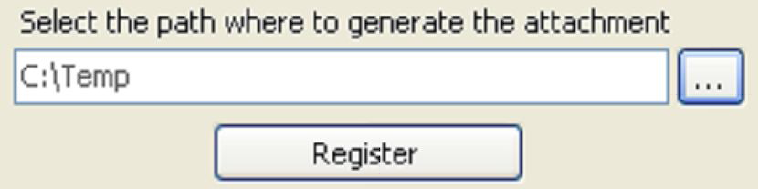
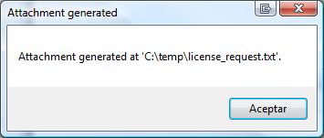

BIZUIT cuenta con una herramienta de licenciamiento para realizar la registración tanto on-line como off-line de los productos BIZUIT una vez que los mismos se hayan instalado.
El esquema de licenciamiento de BIZUIT controla la cantidad de procesos disponibles en el producto BIZUIT Server y la cantidad de usuarios en BIZUIT Dashboard Server.
Mientras las licencias para los productos BIZUIT Server y BIZUIT Dashboard Server no se hayan aplicado, ambos productos estarán corriendo en modo "Community Edition" con funcionalidades acotadas según lo especificado en dicha edición.
El utilitario para realizar el registro de las licencias se encuentra disponible como un archivo ejecutable denominado “Tycon.Bizuit.LicenseRequesterWin.exe” en el directorio de instalación de cada una de las herramientas BIZUIT susceptibles de ser licenciadas(por defecto c:\inetpub\wwwroot\BIZUITDashboardAPI para BIZUIT Dashboard Server y c:\inetpub\wwwroot\BIZUITServer para BIZUIT Server).
La herramienta de licenciamiento le será de utilidad en alguno de los siguientes casos:
Ejecutando el utilitario Tycon.Bizuit.LicenseRequesterWin.exe se presentará la siguiente pantalla en la que podrá registrar cada uno de los productos BIZUIT de dos maneras: a) Online y b) Offline.
Nota: Recuerde que para registrar el producto BIZUIT Dashboard Server deberá ejecutar el utilitario instalado en el directorio de instalación de BIZUIT Dashboard Server API y para registrar el producto BIZUIT Server deberá ejecutar el utilitario instalado en el directorio de instalación de BIZUIT Server. Los utilitarios no son intercambiables.

Ingrese el código de licencia que recibió por correo:

Si la licencia es correcta, recibirá la siguiente pantalla, haga click en Ok y luego reinicie los servicios de IIS.

En caso de tener acceso a Internet presione el Botón Register de la sección “Register Online”.

Aguarde unos instantes y recibirá una pantalla de confirmación de la activación.
En caso de no tener acceso a internet seleccione un directorio existente en su PC en el cual se generara un archivo llamado license_request.txt.



Luego de haber seleccionado el directorio, presione el botón Register y aparecerá la siguiente ventana confirmando la acción.

Luego navegue al directorio seleccionado, obtenga el archivo license_request.txt y envíelo como attachment a la dirección register@tycon.com.ar. El equipo de soporte de BIZUIT le enviará un archivo “tycon.lic” que deberá colocar en el directorio de instalación del producto BIZUIT que se encuentre registrando (por defecto c:\inetpub\wwwroot\BizuitDashboardAPI para BIZUIT Dashboard Server y c:\inetpub\wwwroot\BIZUITServer para BIZUIT Server).
Luego de copiar el archivo tycon.lic en el directorio correspondiente deberá reiniciar los servicios de IIS para que el cambio sea aplicado.
Anterior / Siguiente